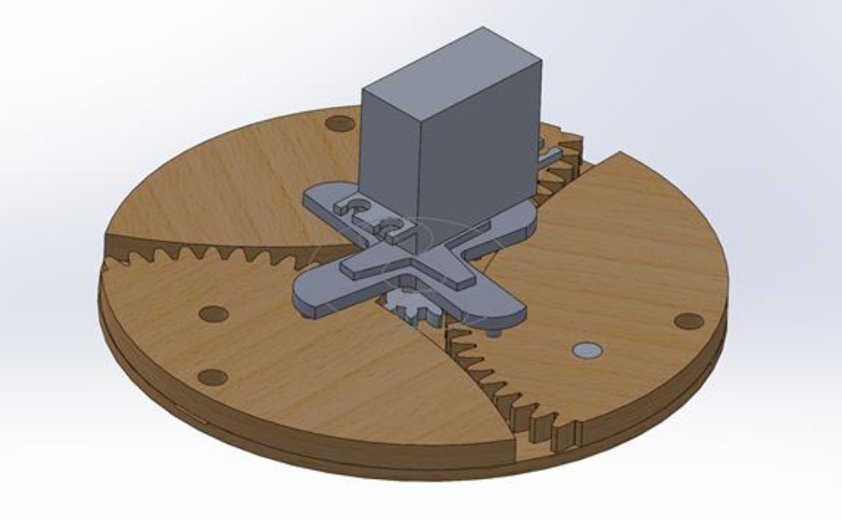
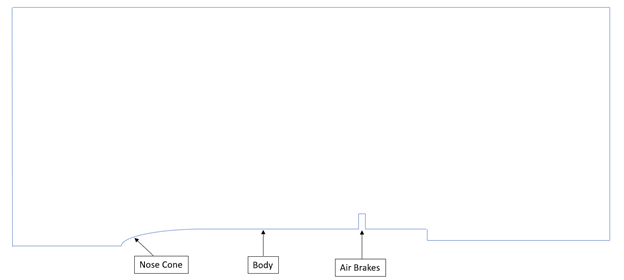
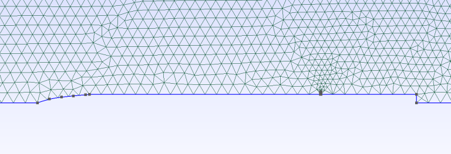
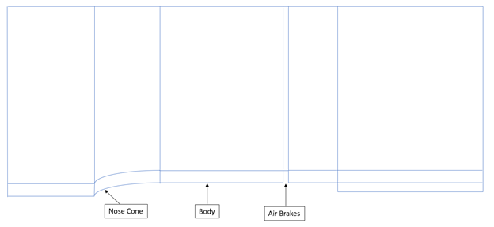

The Intercollegiate Rocket Engineering Competition (IREC) highly values the precision of reaching target apogee, which for our category was 10,000 ft. Over/under achieving the height would cost points during competition. Therefore in order to capitalize on this rule our recovery team developed a clever design to partially control aerodynamic forces through the use of an air braking system. The system is made of three wings that are actuated by a single planetary gear in the center (See figure 1). The wings protrude from the rocket body creating drag inductions, essentially decreasing velocity. The central planetary gear (which allows all leaflets to extend uniformly) is connected to a servo motor and controlled via the flight computer.
I did not want to complicate my first attempt at creating a mesh so I decided to simplify the problem. I achieved this by converting it into an axis-symmetrical 2-D model. This was done by summing the surface area of the irregular (not axis-symmetrical) design of the air-brakes and calculating a height such that even distribution of the wing around the rocket body would occur. Figure 2 shows the general schematic.
After some research on mesh designs I decided to make the domain of 12 times the length of the airfoil. Figure 3 and 4 show the resulting mesh.
One improvement I decided to make was to convert it into a structured mesh. Even though for a simplistic design it would not matter too much if it were structured or unstructured I decided to convert it into structured for fun. I divided the space into rectangles and used linear progression to create dense meshes where needed and sparse where not too much was going on. The result can be seen in Figures 5-8.

// Gmsh project created on Fri Aug 07 13:47:24 2020
SetFactory("OpenCASCADE");
Point(1) = {0, 0, 0, 1};
Point(2) = {434.33, 70.8, 0, 1};
Point(5) = {2358, 70.08, 0, 1};
Point(6) = {2358, 92.01000000000001, 0, 1};
Point(7) = {2362, 92.01000000000001, 0, 1};
Point(8) = {2362, 70.08, 0, 1};
Point(14) = {100, 33.72, 0, 1};
Point(15) = {200, 47.68, 0, 1};
Point(16) = {300, 58.44, 0, 1};
Point(18) = {400, 67.42, 0, 1};
Point(21) = {3158, 0, 0, 1};
Point(30) = {3158, 70.08, 0, 1};
Point(31) = {434.33, 92.01000000000001, 0, 1};
Point(33) = {3158, 92.01000000000001, 0, 1};
Point(38) = {29000, 0, 0, 1};
Point(39) = {-29000, 0, 0, 1};
Point(40) = {-29000, 29000, 0, 1};
Point(41) = {29000, 29000, 0, 1};
Point(46) = {434.33, 29000, 0, 1};
Point(52) = {29000, 92.01000000000001, 0, 1};
Point(53) = {29000, 70.08, 0, 1};
Point(54) = {0, 21.21, 0, 1};
Point(55) = {100, 54.93, 0, 1};
Point(56) = {200, 68.89, 0, 1};
Point(57) = {300, 79.65000000000001, 0, 1};
Point(58) = {400, 88.63, 0, 1};
Point(59) = {0, 29000, 0, 1};
Point(60) = {2358, 29000, 0, 1};
Point(61) = {2362, 29000, 0, 1};
Point(62) = {-29000, 21.21, 0, 1};
Point(63) = {3158, 29000, 0, 1};
Line(1) = {2, 5};
Transfinite Line {1} = 20Using Progression 1.25;
Line(2) = {5, 6};
Transfinite Line {2} = 10Using Progression 1;
Line(3) = {6, 7};
Line(4) = {7, 8};
Transfinite Line {4} = 10Using Progression 1;
Line(5) = {8, 30};
Transfinite Line {5} = 20Using Progression 0.8;
Line(6) = {30, 21};
Transfinite Line {6} = 10Using Progression 1;
Line(7) = {30, 33};
Transfinite Line {7} = 10Using Progression 1;
Line(8) = {33, 7};
Transfinite Line {8} = 20Using Progression 0.8;
Line(9) = {6, 31};
Transfinite Line {9} = 20Using Progression 1.25;
Line(10) = {1, 39};
Transfinite Line {10} = 400Using Progression 1;
Line(12) = {40, 59};
Transfinite Line {12} = 400Using Progression 1;
Line(13) = {54, 59};
Transfinite Line {13} = 400Using Progression 1;
Line(14) = {54, 1};
Transfinite Line {14} = 10Using Progression 1;
Line(15) = {39, 62};
Transfinite Line {15} = 10Using Progression 1;
Line(16) = {62, 54};
Transfinite Line {16} = 400Using Progression 1;
Line(17) = {62, 40};
Transfinite Line {17} = 400Using Progression 1;
Line(18) = {59, 46};
Transfinite Line {18} = 3Using Progression 1;
Line(19) = {46, 31};
Transfinite Line {19} = 400Using Progression 1;
Line(20) = {31, 2};
Transfinite Line {20} = 10Using Progression 1;
BSpline(21) = {1, 14, 15, 16, 18, 2};
Transfinite Line {21} = 3Using Progression 1;
BSpline(22) = {54, 55, 56, 57, 58, 31};
Transfinite Line {22} = 3Using Progression 1;
Line(23) = {21, 38};
Transfinite Line {23} = 356Using Progression 1;
Line(24) = {38, 53};
Transfinite Line {24} = 10Using Progression 1;
Line(25) = {30, 53};
Transfinite Line {25} = 356Using Progression 1;
Line(26) = {53, 52};
Transfinite Line {26} = 10Using Progression 1;
Line(27) = {52, 33};
Transfinite Line {27} = 356Using Progression 1;
Line(28) = {33, 63};
Transfinite Line {28} = 400Using Progression 1;
Line(29) = {63, 41};
Transfinite Line {29} = 356Using Progression 1;
Line(30) = {41, 52};
Transfinite Line {30} = 400Using Progression 1;
Line(31) = {46, 60};
Transfinite Line {31} = 20Using Progression 0.8;
Line(32) = {60, 61};
Line(33) = {61, 63};
Transfinite Line {33} = 20Using Progression 1.25;
Line(34) = {60, 6};
Transfinite Line {34} = 400Using Progression 1;
Line(35) = {7, 61};
Transfinite Line {35} = 400Using Progression 1;
Line Loop(1) = {17, 12, -13, -16};
Plane Surface(1) = {1};
Transfinite Surface {1} = {40,59,62,54};
Recombine Surface {1};
Line Loop(2) = {16, 14, 10, 15};
Plane Surface(2) = {2};
Transfinite Surface {2} = {39,62,54,1};
Recombine Surface {2};
Line Loop(3) = {21, -20, -22, 14};
Plane Surface(3) = {3};
Transfinite Surface {3} = {1,54,31,2};
Recombine Surface {3};
Line Loop(4) = {20, 1, 2, 9};
Plane Surface(4) = {4};
Transfinite Surface {4} = {2,31,6,5};
Recombine Surface {4};
Line Loop(5) = {4, 5, 7, 8};
Plane Surface(5) = {5};
Transfinite Surface {5} = {8,7,33,30};
Recombine Surface {5};
Line Loop(6) = {6, 23, 24, -25};
Plane Surface(6) = {6};
Transfinite Surface {6} = {21,30,53,38};
Recombine Surface {6};
Line Loop(7) = {26, 27, -7, 25};
Plane Surface(7) = {7};
Transfinite Surface {7} = {30,33,52,53};
Recombine Surface {7};
Line Loop(8) = {28, 29, 30, 27};
Plane Surface(8) = {8};
Transfinite Surface {8} = {63,41,52,33};
Recombine Surface {8};
Line Loop(9) = {35, 33, -28, 8};
Plane Surface(9) = {9};
Transfinite Surface {9} = {7,33,63,61};
Recombine Surface {9};
Line Loop(10) = {32, -35, -3, -34};
Plane Surface(10) = {10};
Transfinite Surface {10} = {60,61,6,7};
Recombine Surface {10};
Line Loop(11) = {9, -19, 31, 34};
Plane Surface(11) = {11};
Transfinite Surface {11} = {31,6,46,60};
Recombine Surface {11};
Line Loop(12) = {18, 19, -22, 13};
Plane Surface(12) = {12};
Transfinite Surface {12} = {54,31,59,46};
Recombine Surface {12};
Physical Line("inlet") = {15, 17};
Physical Line("outlet") = {24, 30, 26};
Physical Line("rocket") = {1, 10, 23, 3, 4, 2, 5, 6, 12, 21, 18, 29, 33, 32, 31};